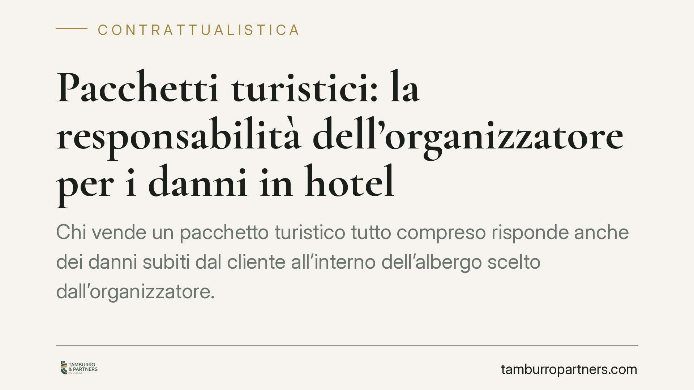

Pacchetti turistici: la responsabilità dell'organizzatore per i danni in hotel
Chi vende un pacchetto turistico "tutto compreso" risponde anche dei danni subiti dal cliente all'interno dell'albergo scelto dall'organizzatore. La giurisprudenza di legittimità conferma un orientamento consolidato: il turista può agire direttamente contro il venditore, che risponde dell'inesatta esecuzione dei servizi acquistati. Un tema che impone attenzione a chi opera nella filiera turistica.

Il principio
Un orientamento ormai stabile della Corte di Cassazione riconosce che il turista danneggiato all'interno della struttura ricettiva può rivolgersi direttamente all'organizzatore o al venditore del pacchetto, e non solo all'albergatore materialmente responsabile.
La ragione è semplice: chi acquista un pacchetto "tutto compreso" conclude un unico contratto con un unico interlocutore. L'albergo non è un soggetto scelto dal cliente, ma un fornitore inserito nel pacchetto dall'organizzatore. Da qui la responsabilità di quest'ultimo per i difetti di esecuzione dei servizi che compongono il viaggio.
Inquadramento normativo
La disciplina dei pacchetti turistici è contenuta nel Codice del Turismo (d.lgs. 23 maggio 2011, n. 79), come modificato dal d.lgs. 21 maggio 2018, n. 62, che ha recepito nell'ordinamento interno la direttiva (UE) 2015/2302 sui pacchetti e i servizi turistici collegati.
Il Codice disciplina la responsabilità per l'esecuzione del pacchetto agli articoli 41 e seguenti. L'organizzatore risponde dell'esecuzione dei servizi turistici previsti dal contratto, indipendentemente dal fatto che tali servizi siano forniti da terzi (gli albergatori, i vettori, le guide). Il viaggiatore ha diritto a un indennizzo per i danni subiti in conseguenza della mancata o inesatta esecuzione.
Non si tratta, tuttavia, di una responsabilità assoluta. La legge prevede cause tassative di esonero: in sintesi, quando il difetto di esecuzione è imputabile al viaggiatore, a un terzo estraneo alla fornitura dei servizi e imprevedibile o inevitabile, oppure a circostanze inevitabili e straordinarie. È più corretto, dunque, parlare di responsabilità ex lege per inesatta esecuzione del pacchetto, piuttosto che ricorrere alla rigida dicotomia tra obbligazioni di mezzi e di risultato.
Il meccanismo: responsabilità solidale e regresso
Il turista può agire contro l'organizzatore/venditore. Questo non elimina la responsabilità diretta dell'albergatore, che resta chiamato a rispondere del proprio operato secondo le regole ordinarie sulla custodia e sulla sicurezza della struttura.
Il punto pratico è il seguente: organizzatore e albergatore possono rispondere in via solidale. Il danneggiato può quindi pretendere l'intero risarcimento dall'uno o dall'altro, senza dover individuare a monte la quota di responsabilità di ciascuno.
Chi ha pagato per intero conserva poi l'azione di regresso verso gli altri responsabili, per recuperare la parte di danno a questi imputabile. In concreto, l'organizzatore che risarcisce il cliente può rivalersi sull'albergatore responsabile dell'infortunio.
Implicazioni pratiche
Contrattualistica. Chi organizza o vende pacchetti deve costruire con cura i rapporti a monte con i fornitori. Le clausole di manleva e di distribuzione del rischio con alberghi e vettori diventano decisive per rendere effettiva l'azione di regresso.
Assicurazioni. La copertura della responsabilità civile deve tener conto del rischio di dover rispondere per fatti materialmente addebitabili a terzi. Vanno verificati massimali, esclusioni e coordinamento con le polizze dei fornitori.
Contenzioso. In giudizio, la posizione dell'organizzatore è più esposta: il cliente non deve provare a chi sia materialmente imputabile il danno, ma solo il difetto di esecuzione del servizio acquistato. La difesa si gioca sulle cause di esonero e sulla documentazione del rapporto con il fornitore.
Cosa fare in concreto
- Inserire clausole di manleva e regresso nei contratti con alberghi, vettori e fornitori, graduando la ripartizione del rischio in modo chiaro e azionabile.
- Verificare le coperture assicurative, controllando che la polizza RC includa i danni per fatti materialmente riconducibili ai fornitori e sia coordinata con le loro.
- Raccogliere e conservare la documentazione sui fornitori: certificazioni, standard di sicurezza, verbali di sopralluogo, utili sia in regresso sia in difesa.
- Predisporre una procedura di gestione dei sinistri, con tempi di raccolta delle prove e di segnalazione ai fornitori e agli assicuratori.
- Allineare periodicamente i modelli contrattuali all'evoluzione normativa e giurisprudenziale in materia di pacchetti turistici.
Disclaimer
Contributo informativo a cura di Tamburro & Partners - Avv. Giuseppe Tamburro. Non costituisce parere legale.
Ogni contratto ha il suo equilibrio.
Se vuoi una revisione delle clausole o una redazione su misura, scrivi allo studio. Ti rispondiamo entro un giorno lavorativo.